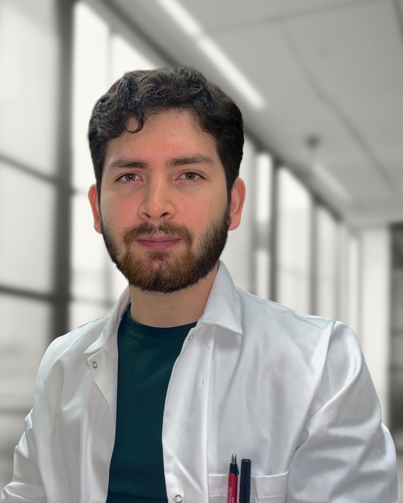

University of Maryland, College Park · PhD · Aug. 2022 – Present
PhD, Biochemistry (In Progress) · Expected completion: late 2027–early 2028
Advanced to candidacy May 2025
Ronald E. McNair Graduate Fellowship · UMD Graduate School Society of Fellows

Structural Biology · Computational Biology · Science Policy
Biochemistry PhD candidate in the Myles Poulin group at the University of Maryland, College Park. I investigate bacterial biofilm polysaccharide pathways using structural biology, membrane protein biochemistry, and computational modeling. My work also spans scientific communication, mentoring, and science policy. I am exploring science-facing opportunities in biotechnology, medical affairs, and science policy.
PhD, Biochemistry (In Progress) · Expected completion: late 2027–early 2028
Advanced to candidacy May 2025
Ronald E. McNair Graduate Fellowship · UMD Graduate School Society of Fellows
B.S., Biochemistry and Biological Sciences (Physiology & Neurobiology)
Ronald E. McNair Summer Research Fellowship · Parmar Family Endowed Scholarship
Supervisor: Dr. Myles Poulin · Dept. of Chemistry & Biochemistry
Investigate Nfr-mediated exopolysaccharide synthesis through protein purification, enzyme assays, structural characterization, and molecular modeling.
2026 UMD Center of Excellence in Microbiome Sciences Student Fellow.
Supervisor: Dr. Yanxin Liu · Dept. of Chemistry & Biochemistry
Supervisor: Dr. Osvaldo Gutierrez · Dept. of Chemistry & Biochemistry
Supervisor: Dr. Avindra Nath · National Institute of Neurological Disorders & Stroke
NIH NINDS Exceptional Summer Intern Award (2019)
InspiraSTEM (El Salvador)
Designed and taught Spanish-language workshops in molecular modeling, docking, and computational biochemistry.
University of Maryland, College Park
Program Lead: La Familia Peer Mentoring Program
University of Maryland, College Park
Courses: BCHM477, CHEM232, BSCI170, BSCI171; BCHM461 (grader)
President, SACNAS at UMD (2026–2027); involved in the UMD Science Policy Group and the Scientist Network for Advancing Policy (SNAP).
Collaborative computational methods project focused on accessible, cloud-based molecular docking and ligand pose evaluation.
Arnett, M., et al. (including Flores, S. J.). The Scientist Network for Advancing Policy (SNAP): Building Infrastructure for Early-Career Scientists in Policy and Public Engagement. BioScience 76(8), 683–689 (2026).
ACS Fall 2025; SACNAS NDiSTEM 2025 and 2026; InspiraSTEM 2026
McNair Conference 2021; USM LSAMP Research Symposium 2021
NIH Summer Poster Day 2019
NIH Summer Poster Day 2018
Location: DC-metro area
Email: sflores4@umd.edu